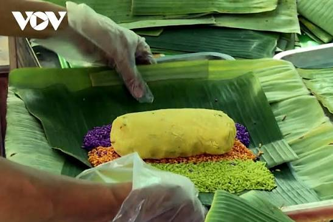

Nguyên liệu cốt lõi bún nước lèo Trà Vinh
Phần nước lèo (siu quan trọng)- Mắm: "Linh hồn" của món ăn, thường là mắm bò hóc (Prahok, mắm của người Khmer) hoặc có thể kết hợp thêm mắm cá sặc, cá linh để tạo hương vị đặc trưng, mặn mòi.
- Cá: Thường dùng cá lóc (cá tràu) để nấu nước dùng và lấy thịt, tạo vị ngọt thanh.
- Sả: Cây sả đập dập cho vào nồi nước lèo tạo mùi thơm nồng, khử mùi mắm và làm ấm bụng.
- Ngải bún: Một loại cây thuộc họ gừng, là gia vị đặc trưng không thể thiếu, tạo nên mùi vị rất riêng biệt cho bún nước lèo Trà Vinh.
- Nấm rơm: Thường được thêm vào nước lèo để tăng vị ngọt và độ giòn.
- Bún tươi: Loại bún sợi nhỏ, mềm, làm từ bột gạo truyền thống.
- Thịt :Thịt heo quay với da giòn, béo là thành phần không thể thiếu, tạo nên sự độc đáo so với các loại bún nước lèo khác.
- Huyết heo: Huyết luộc chín, mềm ngon.
- Các loại ăn kèm khác: Chả giò (nem rán), bánh giá, tôm khô... tùy quán và sở thích.
Rau sống ăn kèm rất đa dạng và tươi mát, giúp cân bằng vị mặn của mắm:
- Bắp chuối bào
- Rau muống chẻ
- Giá đỗ
- Hẹ
- Rau thơm (húng, quế...)
- Chanh, ớt (để nêm nếm thêm theo khẩu vị)

Bí quyết nguyên liệu bánh tét Trà Cuôn
Phần vỏ và nếp- Nếp: Phải là loại nếp sáp dẻo, hạt mẩy, trắng đều, được tuyển chọn kỹ lưỡng. Nếp được ngâm qua đêm rồi vo sạch, xóc với một chút muối.
- Lá chuối: Dùng lá chuối sứ hoặc lá chuối hột, phải là lá non vừa tới, được lau sạch hai mặt và phơi héo nhẹ cho dẻo để dễ gói và không bị rách.
- Dây buộc: Thường dùng dây lạt tre mỏng, dẻo dai.
- Nước cốt dừa: Một số nơi (hoặc theo bí quyết gia truyền) sẽ trộn nếp với một chút nước cốt dừa để tăng độ béo và thơm cho bánh.
- Đậu xanh: Đậu phải là loại đậu cà (hạt nhỏ nhưng bùi), ngâm mềm, đãi sạch vỏ, hấp chín, rồi tán nhuyễn và xào sơ với gia vị (hành tím, tiêu, muối) cho thơm.
- Lòng đỏ trứng muối: Nhiều nhà làm bánh Trà Cuôn nổi tiếng sử dụng trứng vịt muối, tách lấy lòng đỏ, ngâm qua rượu trắng và gừng để khử tanh, sau đó hấp chín.
- Tôm khô: Tôm đất khô, ngâm mềm, giã nhuyễn rồi xào sơ với mỡ hành.
- Lạp xưởng: Lạp xưởng ngon được cắt khúc vừa phải.
Bánh tét Trà Cuôn không chỉ ngon mà còn đẹp mắt nhờ màu sắc tự nhiên từ lá cây:
- Màu xanh: Từ nước cốt lá bồ ngót (hoặc lá dứa).
- Màu tím/đỏ: Từ nước lá cẩm.
